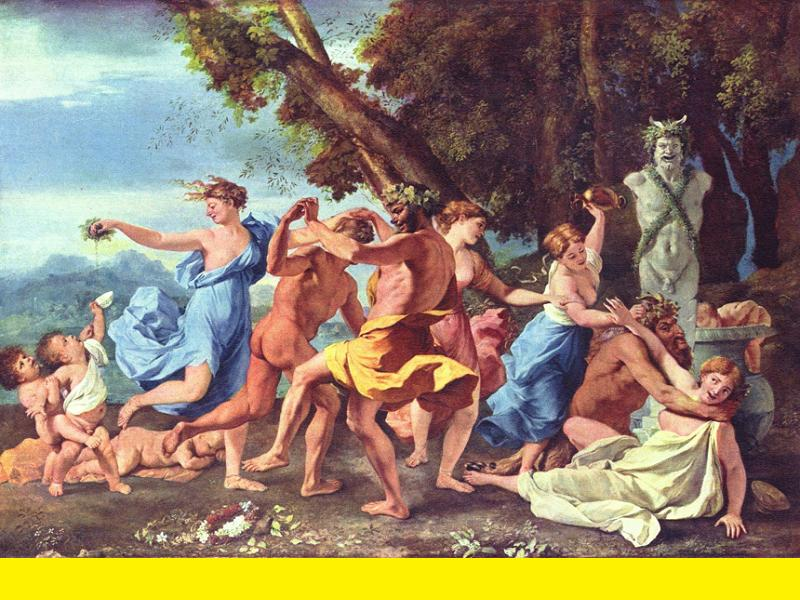

Mo Bhobag an Dram - The Dram Shell
Am Botal dubh 's an t-slige chreachann (*)
Mon garçon, un verre! - La "bouteille noire" et le "quaich"
A bacchanalian song by Alexander McDonald

Botal dubh (An) * Kick ye Buckett * Buckett (The) * Colonel (The)
Sequenced by Christian Souchon
Sources:
1. "The Airs and Melodies of the Highlands", Captain Simon Fraser. N°33, "The Dram shell", p.11, edition 1874 (first published in 1813).
2. Andrew Kuntz' Site "Fiddler's Companion" (see links): "The Bucket", Jig 9/8, Aird, vol. II (1785).
3. Idem: "The Buckette", Slip Jig 9/8, William Vickers’ music manuscript collection (Northumberland, 1770).
4. Idem: Song "The Colonel", Kerr – Merry Melodies, vol. 4, No. 161 (c. 1880’s).
|
To the tunes:
"The air of the "Dram Shell" or "Quaich" was a favourite with the famous Gaelic poet, Alexander McDonald , whose Jacobite songs were burnt soon after the 1745, -with which he coupled this strong expression, though by no means given to excess, "That it was when the quaich was at his lips, the sentiments of the heart came forth genuine," - alluding to his enthusiastic attachment to the Stuart family-, ..."and vice versa". . Fraser (The Airs and Melodies Peculiar to the Highlands of Scotland and the Isles), 1874; No. 33, pg. 11. (*) In fact it seems that the Gaelic title given by Captain Fraser to this song ("Am Botal etc.") means "The black bottle and the scallop shell" where "black bottle" refers to illegal spirits and "scallop shell" to the aforementioned "quaich". Alexander McDonald's poem "Mo bobhag a"n Dram!" (My boy, a dram!), published in 1865 by John McKenzie, as stated below, scans adequately this tune. However another tune is referred to in the mention "Air fonn 'The bucket you want' ", following the title of the poem in J. McKenzie's book. As stated in Andrew Kuntz' "Fiddler's Companion" (see links): The modern air from Kerr's "Merry Melodies" (ca. 1880), also titled "The Colonel" also scans this poem. To the lyrics: Alexander McDonald's lyrics were not lost as assumed by Captain Fraser (whose Jacobite sympathy here leaks out). They were published in 1865 by John McKenzie in his "Sàr-Obair nam Bard Gaelach / Beauties of Gaelic Poetry" . It is the below text. This piece belongs in two categories of songs: bacchanalian Songs and cryptic songs where the Prince is addressed like a beautiful woman . I found no translation for this text. The present translations are based on "Am Faclair Beag" on-line dictionary and the "Gaelic grammar overview" of Wikipedia. Please report the most blatant errors! |
A propos des mélodies:
"L' air du "Petit Verre" ou "Quaich" était l'un des préférés du fameux poète gaélique, Alexander McDonald , dont les Chants Jacobites furent brûlés peu après les événement de 1745, -et qu'il concluait par cette phrase bien sentie, bien qu'il n'ait eu aucune tendance à l'excès : "C'est quand le verre touche mes lèvres, que s'expriment les vrais sentiments qui animent mon cœur," - faisant allusion à son attachement sans réserve aux Stuart-, ..."et vice versa".
. Fraser (Les Airs et Mélodies propres aux Hautes Terres et aux Iles d'Ecosse), 1874; No. 33, pg. 11.
L'air moderne tiré des "Merry Melodies" de Kerr (ca. 1880), intitulé, lui aussi "Le Colonel" peut également servir de timbre à ce chant. A propos des paroles: Les paroles composées par Alexandre McDonald n'ont pas disparu comme le suppose le Capitaine Fraser (dont on devine ici les sympathies jacobites). Elles ont été publiées en 1865 par John McKenzie dans ses "Sàr-Obair nam Bard Gaelach / Beautés de la Poésie gaélique" . Il s'agit du texte ci-après. Cette pièce entre, à la fois, dans la catégorie des chants bachiques et dans celle des chants cryptiques où l'on parle du Prince comme d'une jolie femme . Je n'ai pas trouvé de traduction de ce texte. Celles que je propose utilisent le dictionnaire en ligne"Am Faclair Beag" et le "Gaelic grammar overview" de Wikipédia. On voudra bien me signaler les fautes les plus grossières! |

A Quaich

|
LAD, BRING ME A DRAM!
By Alexander McDonald to the tune "The bucket you want" CHORUS * Ho ro, lad, bring me a dram! Ho ro, lad, bring me a dram! Ho ro, lad, bring me a dram! That mirth come into my head! 1. Men, who sit around this table With cheerful bumpers in your fists Don't allow drink to disable Your eloquence it should assist. It's not a toast to trifle with That you shall hear now from my lips: I'm inviting someone to writhe Out of creels on a risky trip. Ho ro etc. 2. It is a whole nation who calls To wipe the war's stain off their brow. With drinks their spirits do not fall But rise. And revenge is their vow. The onus that on you was left Is to remove balms from their sores. Before they tear, of hope bereft, Their plaids and break off their claymores. Ho ro etc. 3. Though you, my sweetheart, are so fair, You were of kisses right sparing. Real kisses I long to share With Jacobus on your coming. On our memories is engraved The name of James for evermore I raise my dram: this name be praised When you land on this hallowed shore. Ho ro etc. 4. Let us curb the consuming fire, Enjoyable warmth to impart, That grief which gloomy thoughts inspire May yield from everybody's heart! May this crystalline song of mine, My beloved, come to your ear And fly over the plain of brine That keeps me apart of my dear! Ho ro etc. 5. May a mild treat of love, a kiss Be passed on by the wind to me, And may this gift blown by your lips Joyful news from Europe convey! Fair kiss, in purity restore Spirit to my tongue and my song That this holy unguent may cure Our bones and flesh of any wrong! Ho ro etc. Transl. Christian Souchon (c) 2015 1. Don't scorn yonder pub, over there, The cinnabar here's nothing worth , Let's drink out with loud snort the jar, That fills my bones and head with mirth! Ho ro mo, &c. 2. I feel as weak as an old hag, Once I got the scent of a dram: "O! Give me my children's legs back, That I may gambol like a lamb!" Ho ro mo, &c. Source: "Sàr-Obair nam Bard Gaelach / Beauties of Gaelic Poetry" edited by John McKenzie in 1865. Translated by: Christian Souchon (c) 2015 |
MO BHOBAG AN DRAM!Le Alasdair MacMaighstir Alasdairair fonn " The bucket you want." LUINNEAG. * Ho rò mo bhobag an dram, Ho rì mo bhobag an dram, Ho rò mo bhobag an dram, ’S e chuireadh an sodan nam cheann. 1. Fhearaibh ta ’r suidhe man bhòrd, Le ’r glaineachan cridheil nar dòrn, Na leanamaid righinn air òl, Ma mill sinn ar bruidhinn le bòl. Na tostachan sigeanta fial, Gan aiseag gu ruige mo bheul; Bu mhireagach stuigeadh, a’s triall, Am màrsal le ciogailt trom chliabh. Ho rò mo etc. 2. ’S tu chuireadh an cuireid san t-sluagh, ’N àm cogaidh ri aodainn nan ruag, Gun òlamaid sgailc dhiot gu luath, Ma sguidseamaid slacain à truaill’. 'S tu dh' fhagadh sinn tapaidh san tòir, 'N am tarruinn nan glas-lann ri sròin, 'Nuair thilgte na breacain de 'n t-slògh, 'S à truaill, bheirt a mach claidhe mòr. Hò rò mo, &c. 3. Ge tu mo leannan glan ùr, Cha phòg mi gu dilinn thu 'n cùil; Ach phògainn, a's dheodhlainn thu rùin, Nuair thig thu 's Jacobus na d' ghnùis: An t-ainm sin is fearr ata ann, Ainm Sheumais a chuir air do cheann; 'S e thogadh an sògan fo m' chainnt, 'S a dh-fhagadh gu blasda mo dhràm. Hò rò mo, &c. 4. Fadamaid teine beag shìos, Na lasraichean cluin a ni grìos, A gharas ar claigeann ’s ar crì’, ’S a dh-fhògras ar n-airteal, ’s ar sgìos. Gur tu mo ghlaineag ghlan lom, Mo leannan is cannaiche fonn; Ged rinneadh thu dh’fheamain nan tonn, Gur mòr tha do cheanal nad chòm. Ho rò mo etc. 5. O fair a ghaoil channaich do phòg, Leig clannadh d' a t-anail fo' m' shròin, Gur cubhraidh learn fannal do bheoil, No tuis agus mire na h-Eòrp. O aisig, a ghlainne, do phòg! Cuir spèiread nar teangaidh gu ceòl; An ìocshlainte bheannaichte chòir, A leasaicheas cnàmhan is feòil! Ho rò mo etc. 1. Cha teid rai'n taigh-osd' tha sud thall, Cha'n fhiach an sineabhar a th' ann, Ge d' olainn am buideal le srann, Gu'n giulan mo cHolàinn mo cheann. Ho ro mo, &c. 2. Thuir cailleach cho libeasd' sa bh' ann, Nuair fhuair i bias air an dram: " O! tairrnibh 'ur casan a chlann, 'S bheir mise mo char air an damhs'." Ho ro mo, &c. Source:"Sàr-Obair nam Bard Gaelach / Beauties of Gaelic Poetry" edited by John McKenzie in 1865. |
GARCON, UN VERRE!
Par Alexandre McDonald sur l'air "The bucket you want" REFRAIN * Holà, mon garçon, un verre! Holà, mon garçon, un verre! Holà! Mon garçon, un verre! Place, en ma tête, à la joie! 1. Nous tous assis à cette table, Nos verres légers à la main Ne nous obstinons pas à boire: A l'éloquence c'est un frein. Ce ne sont pas des toasts volages Que ma bouche exprime à présent, Mais incitation au voyage Parmi les pièges des méchants. Holà etc. 2. O toi que tout un peuple invite De la guerre à laver l'affront, Sache que les toasts laissent vite La place à l'ardeur du bâton. Il te revient l'auguste tâche D'éloigner l'orpin de nos nez, Avant que nos plaids ne s'arrachent, Et nos claymores soient rouillés. Holà etc. 3. De ces baisers du bout des lèvres, Mon pur amour, je ne veux pas; C'est de vrais baisers que je rêve Quand vous reviendrez, Jacque(s) et toi. Il est gravé dans nos mémoires Ce beau nom de Jacque(s) à jamais! Je lève mon verre pour boire, Après ces mots, à sa santé. Holà etc. 4. Amis, baissons un peu la flamme, Que règne une douce chaleur, Non le chagrin, le vague à l'âme, Dans nos crânes et dans nos cœurs! Puisse ce chant simple et limpide, Mes bien-aimés, vous parvenir Par delà la plaine liquide Que pour l'étreinte il faut franchir. Holà etc. 5. Puisse un doux baiser de tes lèvres M'être transmis par le zéphyr Qui depuis l'Europe se lève Pour raviver mon souvenir! Baiser si pur, viens et restaure En ma bouche les harmonies Et que dans nos chairs les blessures Par ce saint onguent soient guéries! Holà etc. Trad. Christian Souchon (c) 2015 1. Il va falloir changer d'auberge, Car le gin ici ne vaut rien, Je vide à grand bruit ma bouteille Celui d'en face le vaut bien. Hò rò mo, &c. 2. Je suis faible comme une femme, Dès que je sens l'odeur du gin: "Des jambes d'enfant je réclame Pour danser, O boisson divine!" Hò rò mo, &c. Source: "Sàr-Obair nam Bard Gaelach / Beautés de la poésie gaélique" publié par John McKenzie en 1865. Traduction: Christian Souchon (c) 2015 |